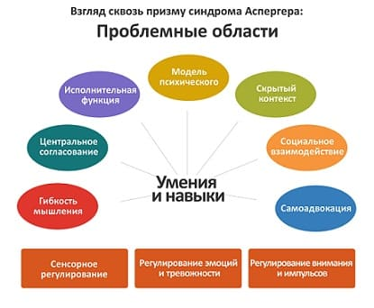

Австрийский врач Ганс Аспергер описал этот синдром в 1944 г. Синдром Аспергера — одна из разновидностей аутизма, но многие специалисты по этому синдрому предпочитают выделять его в отдельную нозологическую форму, так как такие дети в большинстве своем очень разумны, активны и их поведение отличается от такового у детей с аутизмом. Мы считаем, что синдром Аспергера в полной мере относится к тем, кого мы называем «необычными детьми». Самые распространенные особенности детей с синдромом Аспергера:
• они ведут себя несоответственно окружающему обществу. Некоторые дети социально отчуждены, другие — лишь социально неуклюжи. Большинство этих детей испытывают трудности с приемом социальных сигналов и адекватным ответом на них. Они могут сболтнуть мнение, далекое от обсуждаемой темы, во время беседы или прямо посреди занятия;
• им трудно вести диалог;
• они испытывают дискомфорт при контакте глаза в глаза, при попытке вовлечения их в длительную беседу или общественную деятельность;
• им трудно формировать близкие дружеские отношения;
• они могут демонстрировать необычное поведение, например, трясти руками;
• их жесты неуклюжи и непонятны.
У разных детей эти странности могут широко варьировать по количеству и степени выраженности.
ЧТО ДЕЛАТЬ
Будьте социальным лидером для вашего ребенка. Социальные причуды обычно создают проблемы этим детям. Заметьте, с кем из сверстников ваш ребенок адекватно контактирует, и поощряйте эти отношения. Для этих детей важно научиться устанавливать близкие дружеские отношения со сверстниками. Некоторые лучше действуют в отношениях один на один, другие блестяще проявляют себя в групповых играх. Пригласите характерологически совместимых друзей к себе домой поиграть на день или ночевкой. Настройте вашего ребенка на достижение цели.
Вы можете обнаружить, что ваш ребенок лучше относится к детям, равным ему по уму и со схожими интересами, и скучает в обществе тех, кого считает неинтересными. Если вы заметили, что он действует социально неверно — помогите ему справиться с этим. Ваш ребенок может нуждаться в вашей помощи, например, когда другой ребенок приглашает его в игру: он может не понимать этого, и вы должны сказать ему: «Джонни хочет, чтобы ты поиграл с ним».
Поведение, моделирующее социальные отношения. Помогите вашему ребенку научиться чувствовать себя комфортно в общении. Поощрите его слушать и вовлеките в зрительный контакт, например, скажите: «Джимми, я хочу видеть твои глаза и знать, что ты меня слышишь». Усильте свою мимику так, чтобы ему было приятно смотреть на ваше лицо.
Поощрите его таланты. У каждого ребенка есть особые таланты. Выявите их и развивайте. Это может быть спорт, искусство, музыка или наука. Если он ощутит, что его усилия приносят плод, то «перенос действия», вероятно, поможет ему адекватно действовать и в других ситуациях

Многие дети с синдромом Аспергера — яркие и творческие личности. Они часто мыслят нестандартно, «вне своей коробки», и, если им дать соответствующее воспитание и профессиональную помощь, вырастают в строителей новых лучших «коробок». Их мозг работает иначе, и часто это отличие можно направить на благо ребенка. |
Моделируйте сопереживание. Эти дети часто испытывают трудности с сопереживанием — способностью «влезть в шкуру» другого человека и понять, как он воспринимает их поведение. Например, они могут смеяться, когда друг печален. Когда ваш ребенок проявляет эмоции, например, грустит или счастлив, отвечайте такой же эмоцией, скажите: «Я сожалею» или «Я тоже рад». Если ваш ребенок неуместно отвечает на социальные сигналы, например, смеется над грустным человеком, напомните ему: «Это неуместно!»
Проконсультируйтесь со специалистом. Специалисты по синдрому Аспергера есть в большинстве крупных городов. Пообщайтесь с несколькими, чтобы найти подходящего для вашего ребенка.
Здоровье ребенка от докторов Сирс / Сирс У. и др.